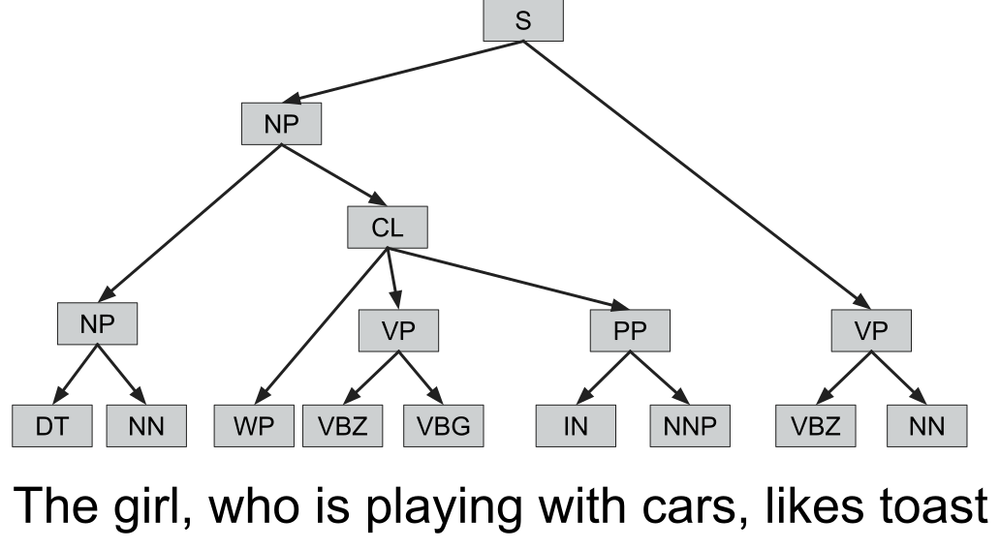
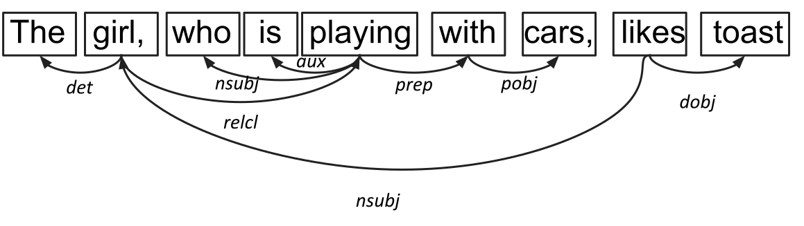
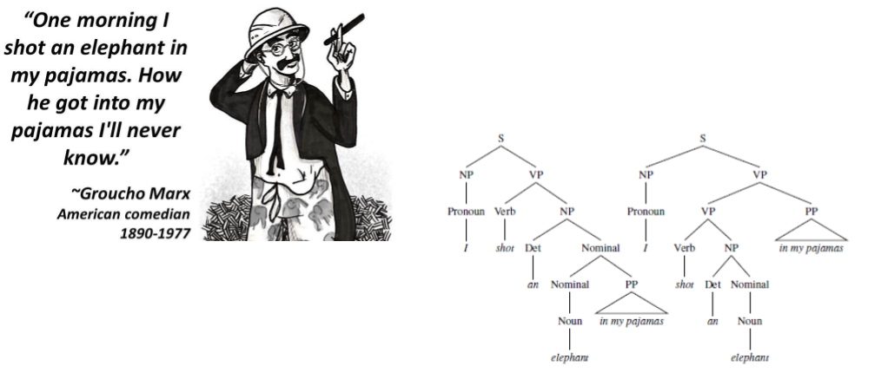

Syntax
John P. McCrae - University of Galway
Course at ESSLLI 2024

Part-of-speech analysis
Part-of-speech tags
| Tag | Description | Example |
|---|---|---|
| ADJ | adjective | yellow, big, international |
| ADP | adposition | with, in, at |
| ADV | adverb | quickly, yesterday, tomorrow |
| AUX | auxiliary | is, has (done), will (do) |
| CCONJ | coordinating conjunction | and, or, but |
| DET | determiner | a, an, the |
| INTJ | interjection | psst, ouch, bravo, hello |
| NOUN | noun | cat, tree, air, beauty |
| NUM | numeral | 1, 2017, one, seventy-seven, IV, MMXIV |
| PART | particle | 's, not |
| PRON | pronoun | I, you, he, she |
| PROPN | proper noun | Mary, John, London, NATO, HBO |
| PUNCT | punctuation | ., (, ), ? |
| SCONJ | subordinating conjunction | if, while, that |
| SYM | symbol | $, %, §, ©, 😝 |
| VERB | verb | work, type, run, speak |
| X | other | sfpksdpsxmsa |
Part-of-speech tagging
Assign a part-of-speech tag to each token
| Token | POS |
|---|---|
| I | PRON |
| am | AUX |
| a | DET |
| linguist | NOUN |
spaCy
For our purposes, we'll use the spaCy library
Example: English genitives
- We can now look at the 's genitive
- Is this a clitic?
- Does the use of more genitives indicate a more informal text?
Parsing
Parsing
Understand the syntactic structure of a sentence by means of the relationships between words
The girl, who is playing with cars, likes toast
Parsing as rewriting
The girl,who is playing with cars, likes toast
Parsing as rewriting
The girl,who is playing with cars, likes toast
Parsing as rewriting
DET NOUNSCONJ AUX VERB ADP NOUN VERB NOUN
Parsing as rewriting
DET NOUNSCONJ AUX VERB ADP NOUN VERB NOUN
Parsing as rewriting
NPRELVP
Parsing as rewriting
NPVP
Parsing as rewriting
S
Phrase grammar
Dependency grammar
Syntactic ambiguity
Ambiguity
https://www.menti.com/nmv7zbqr9sExample: Placement of adverbs
- There is not such thing as an adverb!
- Adverbs are a catch-all category covering several different usages
- Many have claimed that adverbs are special version of adjectives
Example: Placement of adverbs
- We will examine if ly adverbs have a different usage pattern than other adverbs
- We will define this by what they modify
Language Usage
Chunking
- Parsing allows us to group words together as phrases
- We can also use simple (regular expression) patterns to extract chunks
grammar = "NP: {<DT>?<JJ>*<NN>}"
cp = nltk.RegexpParser(grammar)
cp.parse(brown.tagged_sents()[0])Named Entities
- Named entities are phrases that refer to specific entities
- Further specialised by type (person, location, organisation, etc.)
- We can extract these with spaCy
doc = nlp("Apple is looking at buying U.K. startup")
for ent in doc.ents:
print(ent.text, ent.start_char, ent.end_char, ent.label_)Multiword Expressions
- Multiword expressions are phrases that have a special meaning
- A large annotated corpora of MWEs is the PARSEME corpus
- PARSEME corpus
Concordances
We can use the NLTK concordance function to find examples of a word in context
corpus = gutenberg.words('melville-moby_dick.txt')
text = Text(corpus)
text.concordance("monstrous")Word Sketches
- A one-page, automatic, corpus-derived summary of a word
- Used by Sketch Engine in lexicography
Example: Diachronic change
Summary
Summary
- Corpus selection is key to answering linguistic research questions
- Modern NLP can analyse words, syntax, dependencies and language usage
- Concordance can reveal interesting patterns of language usage